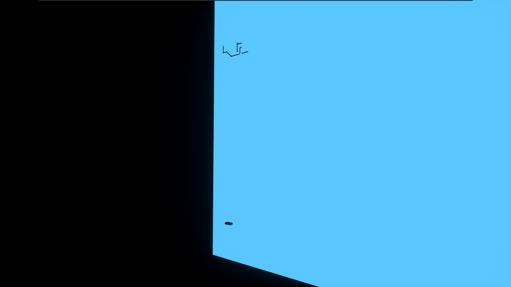
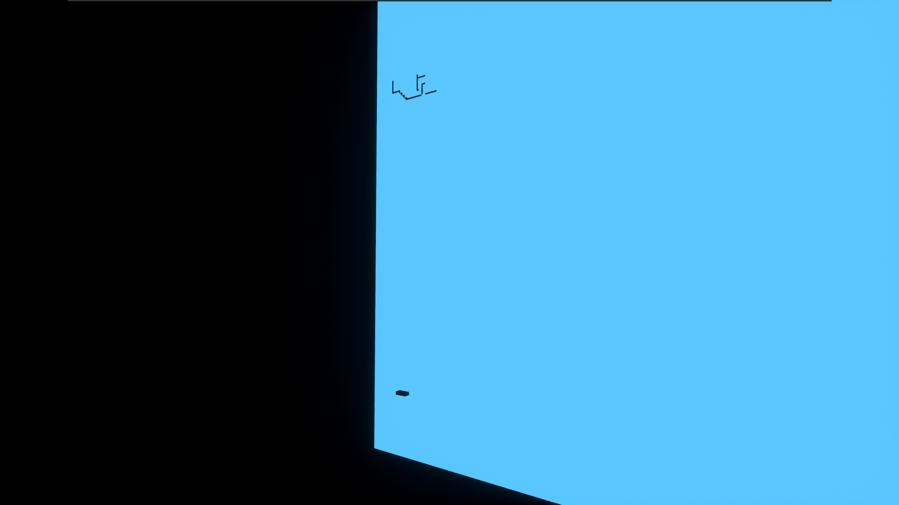
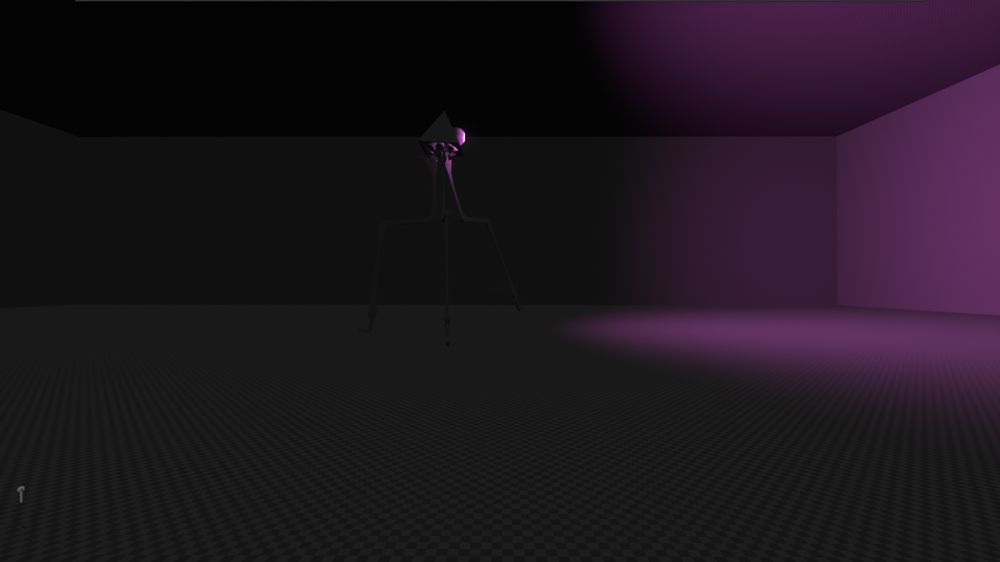
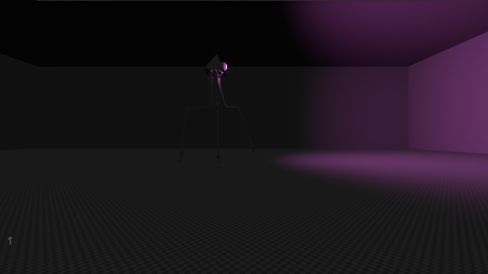
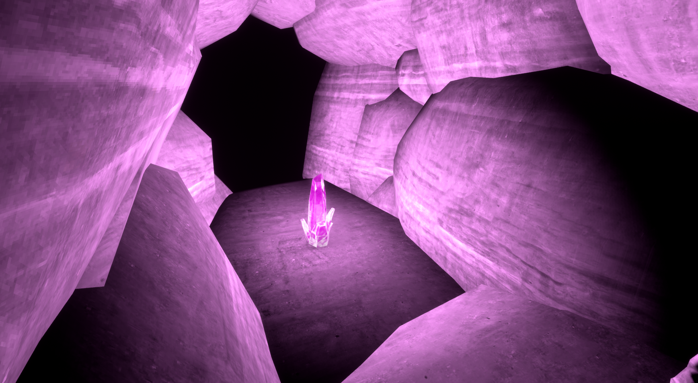
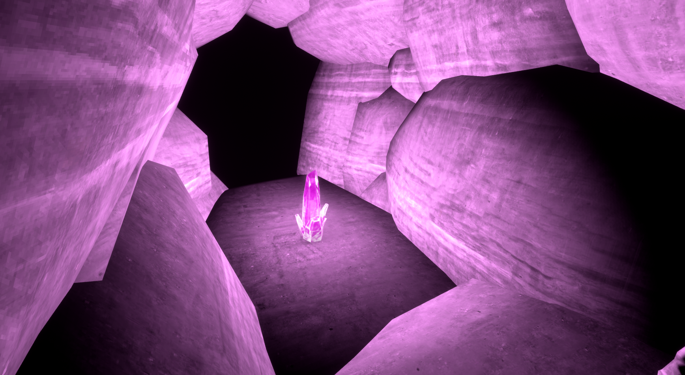

Anomaly Worlds
Description:
Hidden within the game files of VOTV, are some anomaly worlds that are either very strange, unique, have multiple levels, or are extremely random. Some of these worlds cannot be accessed in any normal gameplay mechanic and will require cracking the game, while some can be accessed through specific means.
Some of these levels will include parts of the different test levels and some random ones that you can find and load up.
untitled_27
How to access: Inaccessible
Entities: None
Events: None
Description:
This map is extremely small and is the backrooms level 0.
untitled_42
How to access: Inaccessible
Entities: Bean Goombas
Events: None
Description:
A platformer minigame level, the player's camera is faced towards a 2d platformer game. The player's model and character is transformed into the 2d humanoid. There are no rules, endings, or goals. There are two enemies, a couple obstacles, and an infinite void. The player can jump and move around. Not much else to note about this world.
 

untitled_61
How to access: Inaccessible
Entities: Spider Argemia
Events: None
Description:
A large map that consists of multiple rooms, hallways, and corridors. This level is very simliar and corresponds with that of the Backrooms Poolrooms or backrooms level 37.

untitled_83
How to access: To access you must noclip in the ground or perform the command console glitch
Entities: Furfur
Events:
Description:
This level appears to be the backrooms level 6 or the lights out level. Once there, it is very dark and has a maze like structure that the player spawns in. After some time the backrooms will auto-generate more mazes hence making it infinite. The backrooms also spawns you with a free but fuel-empty lantern. But after a short while the game may crash due to lag. The Furfur can be found here except it only spawns once.

untitled_87
How to access: Inaccessible
Entities: EG, Tripod
Events: None
Description:
A large dark map with an EG Entity spawned nearby the player.
This map contains the first ever version of the Piramid, the Tripod.
 


untitled_104
How to access: Inaccessible
Entities: Schizophreniac Plush
Events: None
Description:
A semi-large map that is a completely flat or blank grass map. The fog density is increased significantly reducing your visibility by a lot. Every second, a Schizophreniac Plush teleports around you.

untitled_129
How to access: Access by performing the Abandoned Well Event event
Entities: None
Events: None
Description:
This map is a dark map that drains your flashlight to zero, it spawns you with a lighter and in a waterlogged room at start.


untitled_9999
How to access: Access this by performing the Hell Opening Event
Entities: None
Events: None
Description:
This map, also known as the hell dimension, is an extremely dark and slightly foggy map.
51
How to access: Inaccessible
Entities: Cutout Greys
Events: None
Description:
This map, also known as the Area 51, is a defenders minigame map. With the goal of defending your base from aliens for as long as you can.
The game was once accessible by typing in the Console Command into the command console. However, in recent versions of the game the developers have completely removed its functionality. But the world still exists within the game files.
Inside the minigame, Cutout Greys will spawn in random locations jumping towards the base, the goal is to shoot them all and protect the base from losing too much health using your gun that is given to you at the start of the minigame. If the game ends, you can reset using f3. The base has a health meter, kill counter, and timer.
untitled_125
How to access: Inaccessible
Entities: None
Events: None
Description:
This map is very similar to the playground map however much darker.

untitled_152
How to access: Access this by performing the Wolfgang Awakening Event.
Entities: None
Events: None
Description:
Branched out cave system that has stalagmites and stalagtites, goes up or down, can be difficult to climb. It is very dark, it leads to nowhere as it generates infinitely. You can encounter the radiation crystals which are green. These crystals are dangerous but minable so make sure you have a hazmat suit or mine it quickly using a pickaxe. If you tap the home button or "." on your numpad, you will fall through a chamber with a purple lifecrystal that cannot be mined due to its dangerous properties. It will set you on fire if you attempt to mine it.

 
